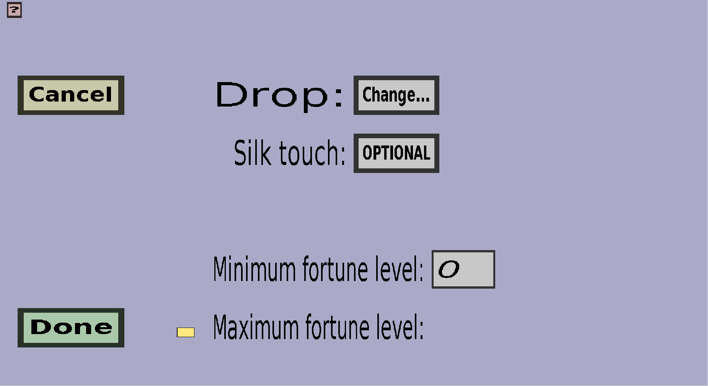

The block drop edit menu can be used to create or modify a block drop
of a custom block. It should look like this:

A block drop is more than just an item/block. It consists of:
-
The items to be dropped, required items to use, and allowed biomes.
-
A silk touch requirement. This determines whether players need
to have silk touch in order to drop items from the output tables
(or whether silk touch is forbidden). This makes it possible to let
the block drop different items when a player breaks it with a tool
that has the silk touch enchantment: you would need 2 block drops:
1 that requires silk touch and 1 that forbids silk touch.
-
A minimum and maximum fortune enchantment level. The items will only be dropped
if the fortune level is at least Minimum fortune level (when the player doesn't use
the fortune enchantment, its level is considered to be 0). You can optionally configure
a Maximum furtune level as well.